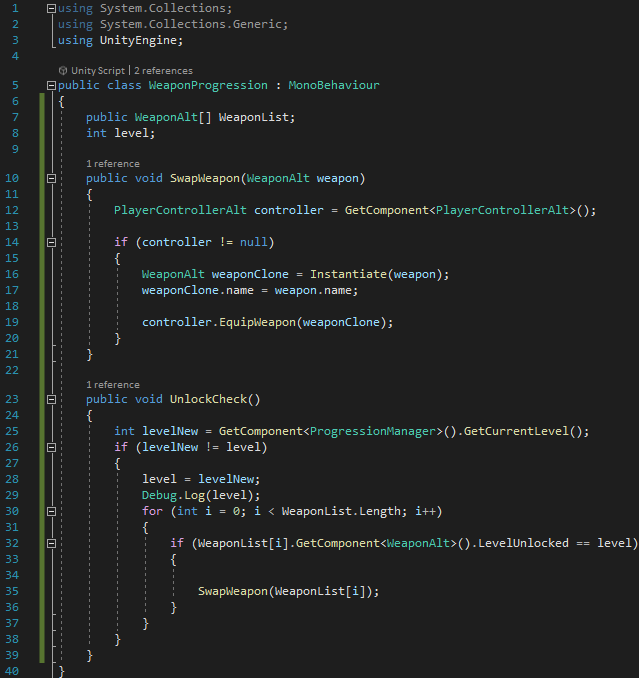
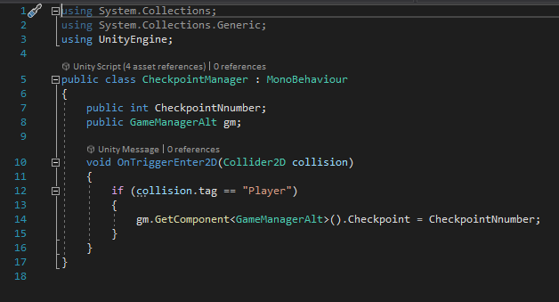

Top Down Shooter
Overview
This 2D Top down shooter style game was was another prototype that I created in a 6 week timeframe for my university course.
This was heavily inspired by the game Terraria as it featured similar weapons and enemies.
It follows a dungeon crawler format as you progress through levels killing different bosses/mini-bosses at the end of each one.
Game Mechanics
XP Progression system:
The main mechanic of this game was the XP progressions system. Upon killing enemies, they would drop a certain number of experience.
When the player levelled up, they would unlock a new weapon.
Code Snippets

Here is the script to check what weapon to give the player when they levelled up and also replace the old weapon they currently had. In order to determine the weapon, it checks through an array with every weapon type in it.
Demonstration Video
Checkpoints:
As this game was quite long in duration. If the player died, rather than go back to the very beginning; I added a checkpoint system.
Code Snippets

This is the code for a checkpoint. If the player runs over it, it changes the value in the game manager script.
Defensive Weapon Types:
Due to the level progression system, there were many weapon types. One of the classes were the defensive weapons which aided the player more than dealing damage.